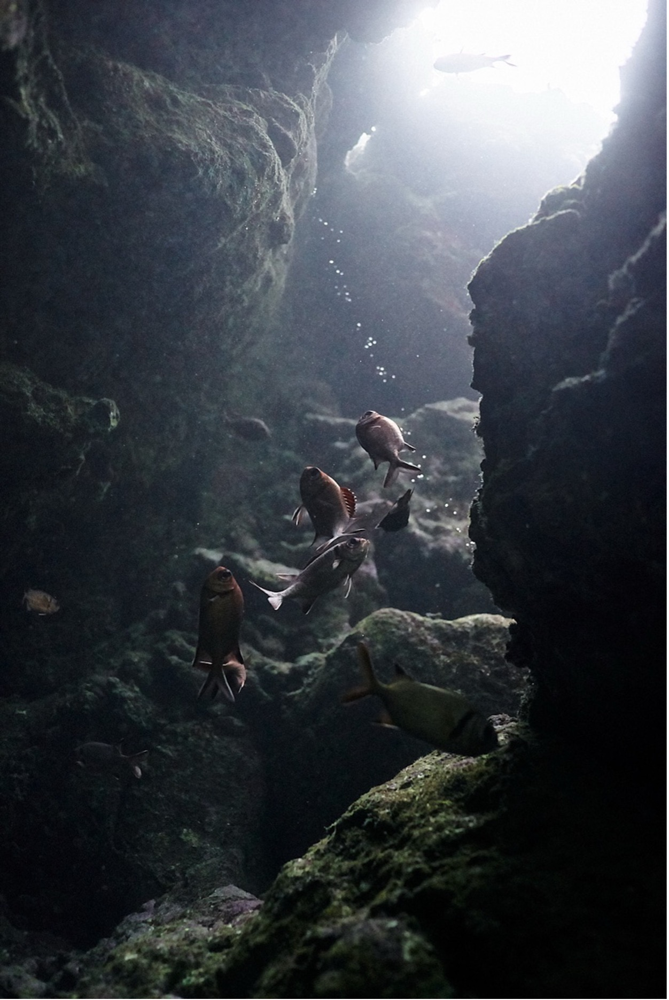
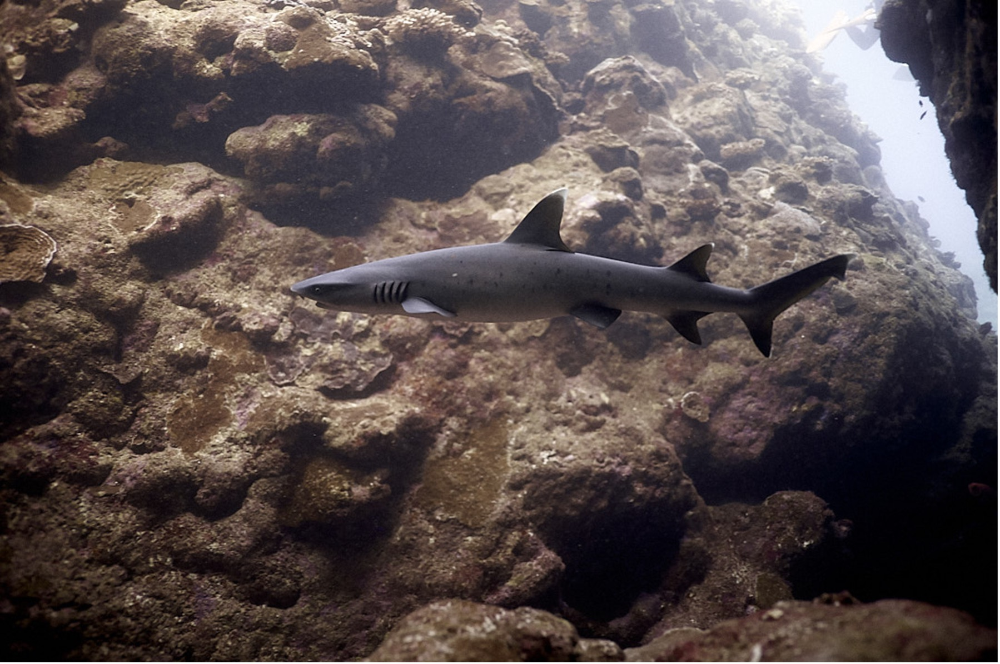
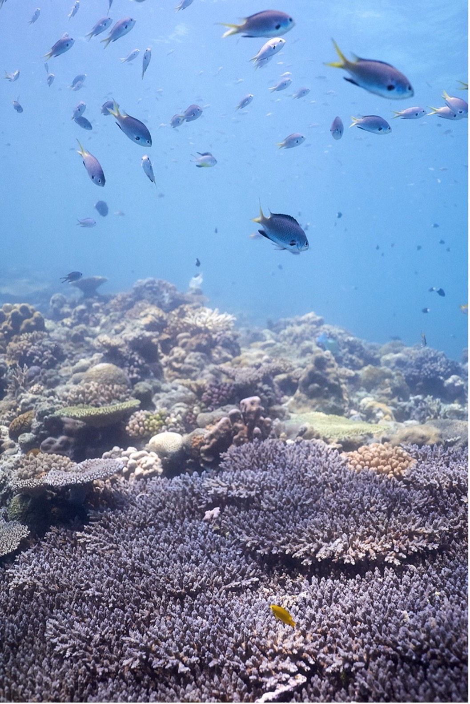
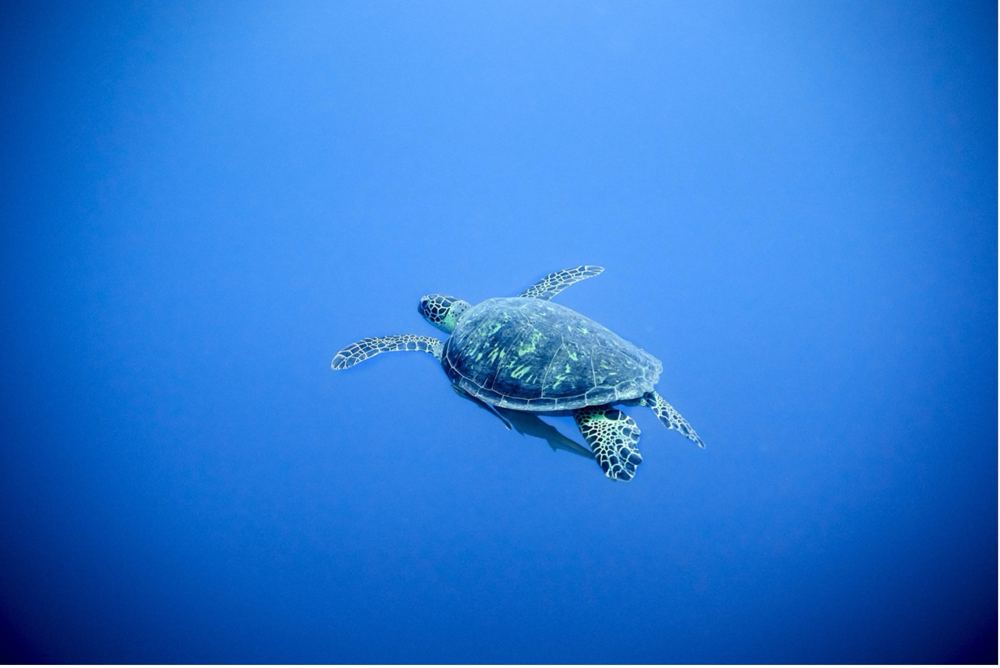

Underwater Production
Film • Dive • Create
Specialized in underwater cinematography, we capture the unseen beauty beneath the surface with precision and artistry.
Discover →

Technical Expertise
Diving Solutions
Our team provides specialized underwater services for film production, research projects, and artistic installations.
Explore →

Creative Process
Visual Narratives
From concept to final delivery, we craft compelling underwater stories with meticulous attention to detail and artistic vision.
Process →

Portfolio
Featured Projects
A curated selection of our work spanning documentary films, commercial productions, and underwater art installations.
View work →